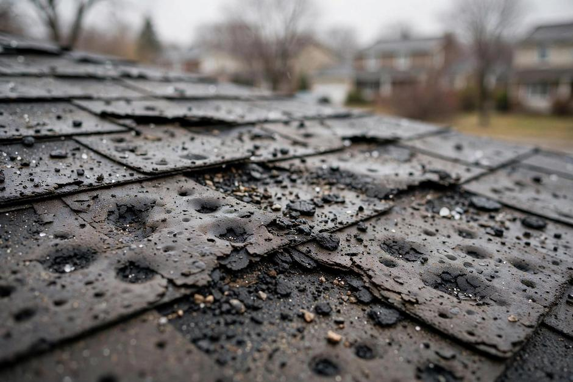

How to spot hail damage on your roof after a storm
Hail leaves marks most homeowners miss until water is already inside. Here is what hail damage looks like, how to document it, and what the hail measures actually say.

Hail damage on a roof looks like small dark bruises, soft spots, and granule loss on shingles — not the dramatic holes most people picture. This guide explains what hail damage actually looks like, how to check from the ground, where it hits hardest, what documentation is useful, and what Illinois hail measures do and do not say.
Two cautions frame the whole guide. First, hail of a given size does not always damage a roof — size, duration, roof age, and material all matter, and no size threshold by itself proves damage. Second, a bruised shingle may not leak immediately: the delayed-leak pattern, in which exposed mat dries, cracks, and fails over following seasons, is why documentation matters even when nothing is leaking yet.
What hail damage actually looks like on a Des Plaines roof
On asphalt shingles, hail shows as random, irregular dark spots where granules have been knocked off and the asphalt mat underneath is exposed. Those spots can feel soft when pressed — a bruise in the mat — which is different from the neat marks of foot traffic or the cracked pattern of shingles that are simply old.
What to look for:
- Dark, soft spots the size of a dime to a quarter, scattered randomly across a slope.
- Exposed asphalt mat where granules have washed away, often shiny or black against the surrounding grit.
- Cracked or split shingles where the impact point has fractured the mat.
- Granule buildup in gutters and at the base of downspouts — a sign that hail stripped the surface.
- Dented metal on vents, flashing, chimney caps, and gutter aprons — the easiest confirmation that hail actually struck.
Hail damage is not always visible from the ground. A shingle that looks fine at thirty feet can carry a soft bruise felt only by hand, which is why a physical on-roof inspection matters more than a photograph from the driveway — and why inspection is professional scope, not a homeowner climb.
How to spot hail damage: a ground-level walkaround
Start on the ground and work around the house. There is no need to climb on the roof to catch the obvious signs — and after a storm, wet shingles are dangerous:
- Walk the perimeter. Look at the ground under downspouts for piles of granules. Fresh granule loss after a storm is one of the strongest indicators of hail impact.
- Check gutters and downspouts. Dents on the outside of gutters, or granules washing out of them, both point to hail.
- Look at metal on the roof. Vents, chimney caps, ridge vents, and exposed flashing show dents. Dented metal corroborates a hail event; it does not by itself prove shingle damage.
- Inspect siding and outdoor equipment. Hail that dents siding or air-conditioning equipment likely struck the roof as well. Note it as corroborating evidence.
- Check window screens and trim. Torn screens, chipped paint on fascia, and dings on frames all corroborate a hail event.
- Look at the roof from a safe vantage point. Use binoculars from the ground, or look from an upstairs window at the slopes facing the storm. Look for dark spots, shiny patches, and missing tabs.
If dents on metal and granule loss are both present, that is enough to justify a professional roof inspection before any insurance decision is made.
Where hail hits hardest on Des Plaines homes
Hail rarely hits a roof evenly. The storm-facing slopes take the brunt, and the parts of the roof that fail first are consistent across guides:
- Ridge caps and hips — the highest points catch the largest stones.
- Field shingles on the storm-facing slope — wide, open areas with no protection.
- Soft metal — vents, pipe boots, and valley flashing dent easily and are the best confirmation of a hail event.
- Older shingles — aged shingles, common on Des Plaines’ mid-century stock, are more vulnerable than newer architectural shingles.
Illinois hail context, with both measures attributed and never blended: Illinois ranked 9th by SPC major-hail-event count, with 167 events in 2025, via the Insurance Information Institute; and 3rd by State Farm 2025 hail claims. Those are different measures — events vs claims — and neither is “the” hail ranking. The National Weather Service severe-thunderstorm hail threshold is 1 inch. Hail-day counts in guides conflict sharply and are not used here.
Does hail damage always require roof repair in Des Plaines IL?
No. Not every hail storm damages a roof enough to require repair, and hail of a given size does not always damage a roof. What matters is the combination of stone size, storm duration, roof age, and material — assessed by inspection, not assumed from a weather report.
The distinction guides draw is between cosmetic and functional damage. Cosmetic damage affects appearance without impairing water-shedding; functional damage means the shingle has lost its ability to shed water. A bruised shingle may not leak in the first weeks — the exposed mat dries, cracks, and fails over following seasons, which is the delayed-leak pattern. That distinction is often a matter of touch on the roof, not sight from the ground, which is why an inspection matters.
For the combined hail-and-wind topic, see the storm damage roof repair page. Hail and wind are covered on one page, not split, because post-storm damage usually involves both.
Hail damage and insurance: the process in general terms
The insurance process is described here in general, lawful terms only. No outcome is promised, and no deadline or coverage rule is stated as fact — those depend on the individual policy:
- Document promptly. Dated photographs of granule loss, dented metal, and shingle damage, plus the storm date, form the record.
- Arrange an inspection. A written report with photographs gives a clear picture of what is damaged before any claim decision.
- The homeowner files the claim. A contractor must not represent the homeowner on a claim, file the claim on the homeowner’s behalf, or climb on a roof or inspect for exterior damage without the insured’s express permission, as summarised in secondary legal sources describing 815 ILCS 513/18(i). The same summaries describe an estimate that may be submitted to the insurer, conferring with an insurer’s representative, and discussing repair options as not barred. Negotiating or settling a claim requires a public-adjuster license (215 ILCS 5/1515, IDOI-licensed).
- Review the scope carefully. Check that the adjuster’s scope includes the slopes actually damaged, plus gutters, vents, and dented metal.
- Choose a contractor separately. Verify the roofer’s Illinois license on the IDFPR License Lookup, and get a written scope before work starts.
On deductibles: roofing contracts in Illinois must include a deductible non-waiver statement (225 ILCS 335 §5.5), and secondary summaries describe a ban on advertising or promising to pay or rebate any part of a deductible. A contractor offering to absorb a deductible is a red flag — see the hiring guide on this blog.
Common mistakes homeowners make after a hail storm
- Climbing on the roof. Wet shingles and steep pitches are fall hazards. Use binoculars from the ground.
- Signing quickly with an out-of-area crew. After major storms, out-of-state crews appear in many markets. Verify licensing, get a written scope, and check that the business has a real local address.
- Filing before knowing the damage. A claim without supporting inspection findings is harder to support. Inspect and document first.
- Assuming no leak means no damage. Hail bruises often do not leak immediately; the delayed-leak pattern plays out over following seasons.
- Ignoring gutters and vents. Dented gutters and vents are part of the record and often the clearest proof of hail impact.
When to call a professional
Call a professional when dents on metal, granule loss in gutters, or dark spots on shingles are visible — and when the roof is older, since aged shingles bruise more readily. An inspection establishes whether damage is cosmetic or functional. For repair topics, see the roof repair page, and for replacement decisions, the roof replacement page.
Frequently Asked Questions
How do I spot hail damage on my roof in Des Plaines?
Look for dark, soft spots on shingles, exposed asphalt mat, granule buildup in gutters, and dents on metal vents, flashing, and chimney caps. Check the storm-facing slopes first, from the ground with binoculars. Dented metal corroborates a hail event; an on-roof inspection establishes shingle damage.
Does hail damage always require roof repair in Des Plaines IL?
No. Whether repair is needed depends on stone size, storm duration, roof age, and material, assessed by inspection. The key distinction is cosmetic vs functional damage, and bruised shingles may not leak immediately — the delayed-leak pattern plays out over following seasons.
How do I file a hail damage claim in Des Plaines?
Document promptly with dated photographs, arrange an inspection with a written report, and file the claim yourself as the homeowner. Deadlines and coverage depend on the policy. A contractor’s lawful role is an estimate, documentation, and conferring with the insurer’s representative — not representing the homeowner.
Who inspects hail damage in Des Plaines Illinois?
Roofing contractors inspect hail damage; verify any roofer’s Illinois license on the IDFPR License Lookup. WP Exterior Inc can be reached at (224) 802-4866 during listed hours. This site makes no “free inspection” claim — ask about terms when calling.
Will my insurance rates go up if I file a hail claim in Illinois?
This guide does not answer that question: rate effects depend on the carrier, the policy, and claim history. Ask the insurer directly. Inspecting and documenting first, and filing only when damage is real, is the approach guides recommend.
Get help with Roofing in Des Plaines
If a storm has passed and the signs above are visible, document what can be seen from the ground and call WP Exterior Inc at (224) 802-4866 during listed hours to discuss an inspection.